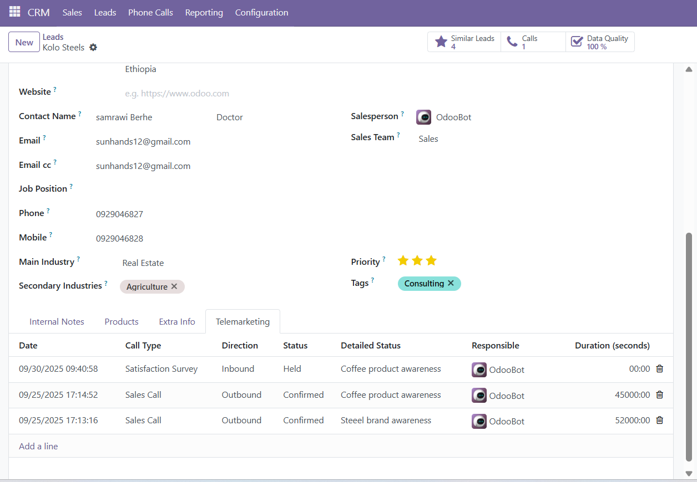

CRM Telemarketing
Advanced Tools for Telemarketing, KPI Tracking, and Reporting
Key Features
Comprehensive Call Logging
Log detailed telemarketing calls directly on the Lead form in a dedicated tab, capturing KPIs for outbound, inbound, and survey calls.
Lead Data Quality Score
Automatically calculate a data quality score based on confirmation checks. A clickable stat button provides quick access to the call history.
Custom OWL Dashboard
A modern, real-time dashboard built with OWL and Chart.js, visualizing call metrics, user performance, and trends.
Unified Reporting
Analyze performance with a unified report that combines custom telemarketing calls and standard Odoo phone calls into Tree, Pivot, and Graph views.
Advanced KPI Tracking
Track crucial metrics like Brand Awareness, Quality of Info, Service/Product Ratings, and Generated Orders to measure team effectiveness.
Configurable Statuses
Define your own detailed call statuses through a simple configuration menu to perfectly match your telemarketing workflow.
Screenshots
Custom OWL Dashboard in Action
Visualize your team's performance with real-time KPIs, charts, and pivot tables.

Enhanced Lead Form with Telemarketing Tab
Log calls and view the Data Quality Score directly on the Lead/Opportunity form.
Unified Telemarketing Report
Analyze combined data from all call types using Odoo's powerful reporting tools.